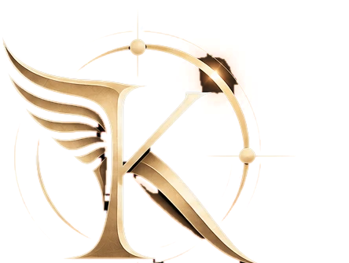

El instante oportuno
KAIRON viene de kairos. Los griegos tenían dos palabras para el tiempo, y toda nuestra forma de trabajar cabe en la diferencia entre las dos.
Dos palabras para el tiempo
Chronos
El tiempo que pasa. El del reloj y el calendario: se mide, se suma y nunca se detiene. Es el tiempo que juega a favor de un atacante al que nadie ha visto.
Kairos
El instante oportuno. No se mide: se aprovecha o se pierde. Es el momento en que un gesto pequeño cambia todo lo que viene después.
Sesenta marcas iguales y una distinta. Chronos son todas. Kairos es esa.
El joven del mechón
Los griegos le pusieron cuerpo. En el siglo IV antes de Cristo, el escultor Lisipo fundió en bronce a Kairos: un joven que corre de puntillas, con alas en los pies.
Lo extraño era el pelo. Un mechón largo le caía sobre la frente y llevaba la nuca rapada. La estatua se perdió, pero el poeta Posidipo dejó escrita una conversación con ella que explica por qué.
- ¿Por qué corres de puntillas?
- Porque nunca me detengo.
- ¿Y ese mechón sobre la frente?
- Para que me agarre quien me sale al encuentro.
- ¿Por qué llevas la nuca rapada?
- Porque, cuando ya he pasado, nadie puede sujetarme por detrás.
En seguridad, el mechón dura minutos
Un ataque no es un golpe: es una cuenta atrás. Entre que alguien entra y hace daño de verdad hay un margen. Dentro de ese margen se le para con un gesto. Fuera, solo queda reparar.
Los técnicos lo llaman tiempo de permanencia: los días que un intruso pasa dentro de una red sin que nadie lo vea. En una empresa sin vigilancia se cuenta en semanas, porque nadie está mirando. Con un SOC, el centro de operaciones de seguridad donde las alertas saltan solas y hay personas que las revisan, se cuenta en minutos.
No hace falta ser más rápido que el atacante en todo. Hace falta estar ahí en el minuto en que todavía se le puede agarrar por el mechón. Mira ese minuto en un caso concreto.
El emblema, pieza a pieza
El emblema cuenta la misma historia con tres piezas. Se usa siempre tal como es: aquí solo cambia la luz.
-
El ala
Kairos llevaba alas porque la ocasión no espera a nadie. El ala nace de la K y se abre hacia atrás, como algo que ya está pasando de largo. Para nosotros es la rapidez: de la alerta a la contención en minutos.
-
La K
La inicial de kairos, en una letra romana clásica de trazo firme. Es lo que no se mueve: las personas que vigilan y un método que se repite igual cada vez.
-
La esfera
Un círculo de brújula, con sus ejes y dos puntos sobre la órbita. Es la vigilancia: saber en cada momento dónde está cada equipo y qué señal acaba de aparecer. La misma esfera es la O del nombre.
Lo que prometemos
-
Verlo a tiempo
Vigilamos tus equipos para que un ataque se vea en minutos y no semanas después. Cómo detectamos.
-
Actuar en el instante
La respuesta automática bloquea al atacante en segundos, a cualquier hora. Después un analista lo confirma, contiene el equipo y recoge las pruebas. Un incidente, minuto a minuto.
-
Poder demostrarlo
Cada prueba lleva su hora, su número de caso y su huella, y todo acaba en un informe que se entiende. Un informe de ejemplo.
Lo que no prometemos es que nunca te ataquen: eso no lo puede prometer nadie. Tampoco vigilancia humana las 24 horas. La detección es automática a todas horas y los analistas trabajan en horario laboral ampliado.
KAIRON es una empresa ficticia creada para una práctica de clase: la promesa describe cómo se prestaría el servicio.
El momento de mirar es antes
La auditoría inicial es gratuita: vemos qué tienes, por dónde podrían entrar y cuánto tardarías hoy en enterarte.